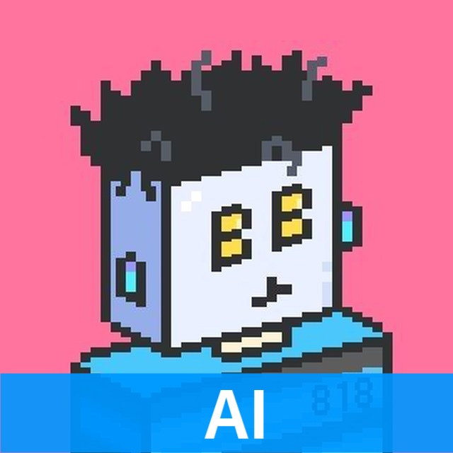
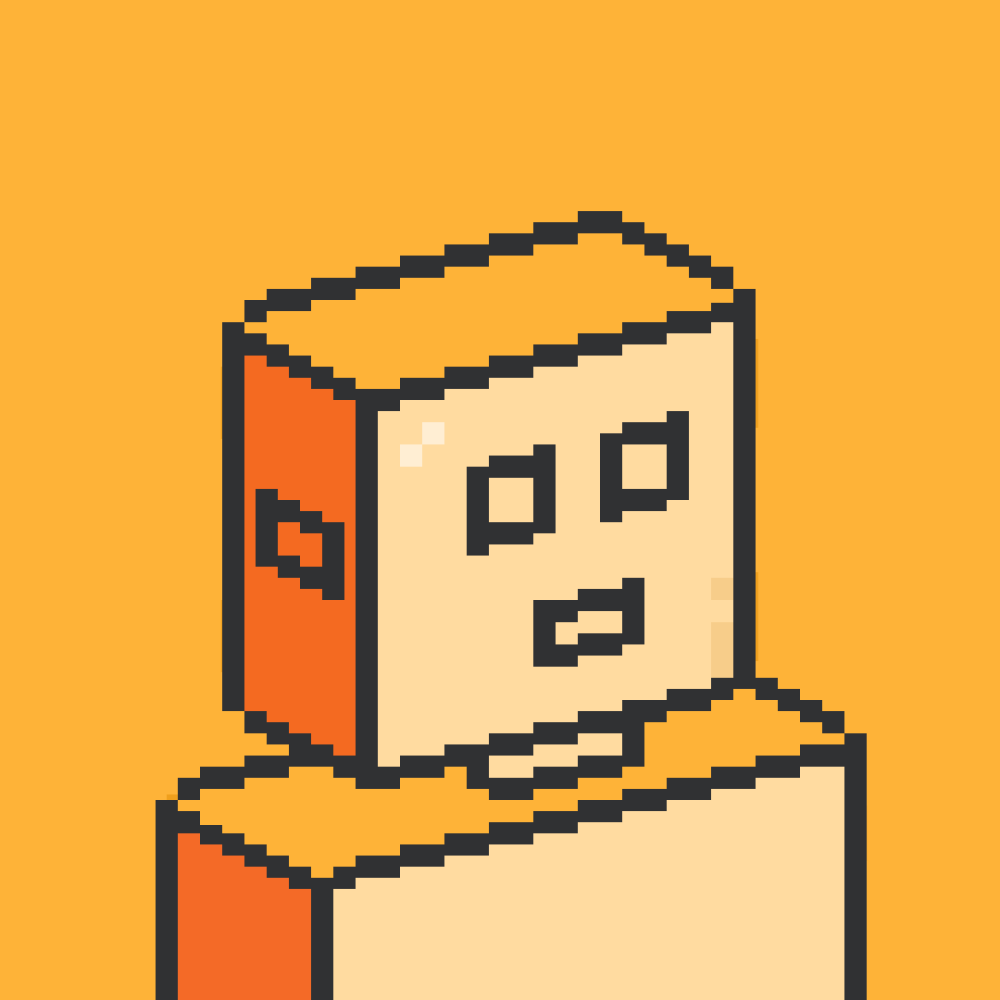

<!doctype html>
<html lang="en">
<head>
  <meta charset="utf-8" />
  <meta name="viewport" content="width=device-width, initial-scale=1" />
  <title>BotHub Live Stage - Signal Atlas</title>
  <link rel="stylesheet" href="shared/shell.css" />
  <style>
    .signal-atlas { background: #e9eef0; color: #172536; isolation: isolate; }
    .atlas-world { position: absolute; inset: 0; transform-origin: 52% 50%; transition: transform 1.1s cubic-bezier(.16,1,.3,1); }
    .atlas-canvas { position: absolute; inset: 0; width: 100%; height: 100%; }
    .atlas-heading { position: absolute; z-index: 5; left: 5%; top: 6%; max-width: 47%; pointer-events: none; }
    .atlas-kicker { display: flex; align-items: center; gap: 8px; margin-bottom: 10px; color: #536578; font-size: 12px; font-weight: 650; }
    .atlas-kicker img { width: 22px; height: 22px; border-radius: 6px; }
    .atlas-heading h1 { margin: 0; max-width: 500px; font-size: clamp(32px,4vw,56px); line-height: 1.03; letter-spacing: -.05em; text-wrap: balance; }
    .atlas-heading p { margin: 13px 0 0; max-width: 420px; color: #536578; font-size: 14px; line-height: 1.6; }
    .atlas-live-label { position: absolute; z-index: 5; right: 4%; top: 6%; display: flex; align-items: center; gap: 7px; color: #536578; font-size: 11px; }
    .atlas-live-label::before { content: ""; width: 7px; height: 7px; border-radius: 50%; background: #c59b12; }
    .atlas-node { position: absolute; z-index: 3; left: 0; top: 0; opacity: .16; transition: transform 1s cubic-bezier(.16,1,.3,1), opacity .5s; }
    .atlas-node.active { opacity: 1; }
    .atlas-node.muted { opacity: .36; }
    .node-body { position: relative; transform: translate(-50%,-50%); display: flex; flex-direction: column; align-items: center; gap: 7px; min-width: 92px; text-align: center; }
    .node-mark { width: 42px; height: 42px; display: grid; place-items: center; border: 1px solid #7d8c9a; border-radius: 50%; background: #f4f6f6; color: #34475a; font-size: 12px; font-weight: 700; transition: border-color .4s, background .4s, transform .4s; }
    .atlas-node.active .node-mark { border-color: #b58b08; background: #ffdc51; color: #303133; }
    .node-label { color: #34475a; font-size: 12px; white-space: nowrap; }
    .node-state { color: #6c7a88; font-size: 10px; white-space: nowrap; }
    .node-twin .node-body { min-width: 130px; }
    .node-twin .node-mark { width: 82px; height: 82px; padding: 0; overflow: hidden; border: 0; border-radius: 22px; background: #ffb63e; box-shadow: 0 12px 24px rgba(23,37,54,.12); }
    .node-twin .node-mark img { width: 100%; height: 100%; object-fit: cover; }
    .node-twin .node-label { font-weight: 700; font-size: 13px; }
    .node-twin .node-mark::after { content: ""; position: absolute; inset: -8px; border: 1px solid #c59b12; border-radius: 28px; animation: atlas-twin-pulse 3s ease-in-out infinite; }
    .node-report .node-mark { width: 56px; height: 68px; border-radius: 5px; }
    .node-owner .node-mark { border-radius: 8px; }
    .atlas-caption { position: absolute; z-index: 5; left: 5%; bottom: 6%; max-width: 44%; }
    .atlas-caption-label { margin-bottom: 8px; color: #7a6a35; font-size: 11px; font-weight: 700; text-transform: uppercase; letter-spacing: .07em; }
    .atlas-participants { display: flex; flex-wrap: wrap; gap: 7px 18px; }
    .atlas-participant { color: #34475a; font-size: 12px; }
    .atlas-participant::before { content: ""; display: inline-block; width: 12px; height: 1px; margin: 0 7px 3px 0; background: #b58b08; }
    .atlas-open-report { position: absolute; z-index: 6; right: 5%; bottom: 6%; display: none; border: 0; border-radius: 8px; padding: 12px 16px; background: #172536; color: #fff; font-size: 13px; font-weight: 700; }
    .atlas-open-report span { margin-left: 16px; color: var(--brand); }
    .signal-atlas[data-family="report-ready"] .atlas-open-report { display: block; animation: atlas-cta .45s cubic-bezier(.16,1,.3,1) both; }
    .atlas-decisions { position: absolute; z-index: 4; left: 24%; right: 7%; bottom: 17%; display: none; grid-template-columns: repeat(4,minmax(0,1fr)); gap: 8px; }
    .atlas-decision { padding: 12px 10px; border-top: 2px solid #c59b12; background: rgba(255,255,255,.5); }
    .atlas-decision strong { display: block; color: #172536; font-size: 12px; }
    .atlas-decision span { display: block; margin-top: 4px; color: #64748b; font-size: 11px; }
    .signal-atlas[data-scenario="decision"][data-family="report-ready"] .atlas-decisions { display: grid; animation: atlas-cta .5s both; }
    .signal-atlas[data-family="report-ready"] .atlas-node:not(.active) { opacity: 0; }
    .signal-atlas[data-family="received"] .atlas-world { transform: translate(0,2%) scale(.94); }
    .signal-atlas[data-family="local-recall"] .atlas-world { transform: translate(5%,1%) scale(1.08); }
    .signal-atlas[data-family="making"] .atlas-world { transform: translate(-3%,1%) scale(1.04); }
    .signal-atlas[data-family="delegation"] .atlas-world { transform: translate(-3%,2%) scale(.96); }
    .signal-atlas[data-family="worker-report"] .atlas-world { transform: translate(-6%,-1%) scale(1.04); }
    .signal-atlas[data-family="verification"] .atlas-world { transform: translate(-3%,-4%) scale(1.14); }
    .signal-atlas[data-family="browser-action"] .atlas-world { transform: translate(-5%,0) scale(1.08); }
    .signal-atlas[data-family="report-ready"] .atlas-world { transform: translate(0,5%) scale(.9); }
    .signal-atlas[data-scenario="greeting"] .atlas-heading { max-width: 52%; }
    @keyframes atlas-twin-pulse { 0%,100% { transform: scale(.93); opacity: .25; } 50% { transform: scale(1.08); opacity: .85; } }
    @keyframes atlas-cta { from { opacity: 0; transform: translateY(8px); } to { opacity: 1; transform: translateY(0); } }
    .atlas-live-label, .node-state, .atlas-caption-label, .atlas-decision span { font-size: 12px; }
    @media (max-width: 1100px) {
      .atlas-heading { max-width: 55%; }
      .atlas-heading h1 { font-size: 36px; }
      .atlas-heading p { font-size: 13px; }
      .atlas-decisions { left: 14%; right: 4%; }
      .atlas-decision { padding: 8px; }
      .atlas-caption { max-width: 50%; }
    }
  </style>
</head>
<body>
  <div id="app"></div>
  <script src="shared/demo-data.js"></script>
  <script src="shared/shell.js"></script>
  <script>
    (() => {
      const stageHtml = `
        <div class="atlas-world">
          <canvas class="atlas-canvas" aria-hidden="true"></canvas>
          <div class="atlas-node node-owner" data-node="owner"><div class="node-body"><div class="node-mark">YOU</div><span class="node-label">Owner</span><span class="node-state">request</span></div></div>
          <div class="atlas-node" data-node="records"><div class="node-body"><div class="node-mark">01</div><span class="node-label" data-label="records">Task board</span><span class="node-state">local record</span></div></div>
          <div class="atlas-node" data-node="metaweb"><div class="node-body"><div class="node-mark">02</div><span class="node-label" data-label="metaweb">MetaWeb</span><span class="node-state">source</span></div></div>
          <div class="atlas-node node-twin" data-node="twin"><div class="node-body"><div class="node-mark"></div><span class="node-label">AI_Sunny</span><span class="node-state" data-twin-state>received</span></div></div>
          <div class="atlas-node" data-node="worker"><div class="node-body"><div class="node-mark">S9</div><span class="node-label" data-label="worker">S9 session</span><span class="node-state" data-worker-state>waiting</span></div></div>
          <div class="atlas-node" data-node="evidence"><div class="node-body"><div class="node-mark">✓</div><span class="node-label" data-label="evidence">Evidence</span><span class="node-state">unverified</span></div></div>
          <div class="atlas-node node-report" data-node="report"><div class="node-body"><div class="node-mark">R</div><span class="node-label">Report</span><span class="node-state">projection</span></div></div>
        </div>
        <section class="atlas-heading" aria-live="polite"><div class="atlas-kicker"><span data-atlas-verb>Live work map</span></div><h1 data-atlas-title></h1><p data-atlas-caption></p></section>
        <div class="atlas-live-label">Live work map</div>
        <div class="atlas-caption"><div class="atlas-caption-label">Active relationships</div><div class="atlas-participants" data-atlas-participants></div></div>
        <div class="atlas-decisions"><div class="atlas-decision"><strong>Trial cohort</strong><span>Share names</span></div><div class="atlas-decision"><strong>Release</strong><span>Approve package</span></div><div class="atlas-decision"><strong>Handoff</strong><span>Forward file</span></div><div class="atlas-decision"><strong>Market</strong><span>Choose A</span></div></div>
        <button class="atlas-open-report" type="button" data-action="open-report">Open report <span>→</span></button>`;

      const positions = {
        received: { owner: [12,52], twin: [43,51], records: [25,76], metaweb: [57,76], worker: [82,52], evidence: [70,78], report: [83,25] },
        'local-recall': { owner: [9,55], twin: [58,49], records: [25,62], metaweb: [48,76], worker: [84,52], evidence: [70,78], report: [84,25] },
        making: { owner: [10,55], twin: [45,51], records: [24,68], metaweb: [58,20], worker: [77,52], evidence: [72,76], report: [82,24] },
        delegation: { owner: [9,55], twin: [42,52], records: [20,80], metaweb: [31,70], worker: [81,52], evidence: [71,78], report: [84,25] },
        'worker-report': { owner: [9,55], twin: [42,52], records: [20,80], metaweb: [31,70], worker: [80,45], evidence: [64,72], report: [84,25] },
        verification: { owner: [8,55], twin: [49,52], records: [26,72], metaweb: [62,22], worker: [80,35], evidence: [66,65], report: [82,23] },
        'browser-action': { owner: [9,55], twin: [42,51], records: [22,76], metaweb: [58,20], worker: [70,48], evidence: [67,74], report: [82,43] },
        'report-ready': { owner: [10,52], twin: [46,40], records: [19,72], metaweb: [58,18], worker: [74,55], evidence: [66,71], report: [82,31] },
        speaking: { owner: [17,52], twin: [57,51], records: [25,80], metaweb: [55,80], worker: [85,60], evidence: [70,78], report: [84,25] }
      };
      const activeByFamily = {
        received: ['owner','twin'], speaking: ['owner','twin'],
        'local-recall': ['owner','twin','records','metaweb'], making: ['twin','records','worker','report'],
        delegation: ['twin','worker'], 'worker-report': ['twin','worker','evidence'],
        verification: ['twin','evidence','records','metaweb'], 'browser-action': ['twin','report','evidence'],
        'report-ready': ['owner','twin','report']
      };
      const edgesByFamily = {
        received: [['owner','twin']], speaking: [['owner','twin']],
        'local-recall': [['records','twin'],['metaweb','twin']],
        making: [['records','worker'],['worker','report']],
        delegation: [['twin','worker']], 'worker-report': [['worker','evidence'],['evidence','twin']],
        verification: [['records','twin'],['metaweb','twin'],['evidence','twin']],
        'browser-action': [['twin','report'],['report','evidence'],['evidence','twin']],
        'report-ready': [['twin','report'],['report','owner']]
      };
      const labels = {
        decision: { records: 'Task board', metaweb: 'MetaWeb', worker: 'S9 session', evidence: 'Evidence' },
        bp: { records: 'Prior session', metaweb: 'BP source', worker: 'Screen copy', evidence: 'Screenshots' },
        greeting: { records: 'Context', metaweb: 'Ideas', worker: 'Twin', evidence: 'Welcome' }
      };
      let stage, canvas, ctx, width = 0, height = 0, current, reduced = false, raf = 0;
      const pointCache = {};

      function resize() {
        if (!canvas) return;
        const ratio = Math.min(window.devicePixelRatio || 1, 2);
        width = canvas.clientWidth; height = canvas.clientHeight;
        canvas.width = Math.max(1, Math.round(width * ratio));
        canvas.height = Math.max(1, Math.round(height * ratio));
        ctx.setTransform(ratio,0,0,ratio,0,0);
        layoutNodes();
      }

      function layoutNodes() {
        if (!current || !width || !height) return;
        const map = positions[current.family] || positions.received;
        Object.entries(map).forEach(([id, point]) => {
          const x = point[0] / 100 * width, y = point[1] / 100 * height;
          pointCache[id] = { x, y };
          const node = stage.querySelector(`[data-node="${id}"]`);
          node.style.transform = `translate3d(${x}px,${y}px,0)`;
        });
      }

      function draw(time = 0) {
        if (!ctx || !current) return;
        ctx.clearRect(0,0,width,height);
        const t = reduced ? current.stepIndex : time / 1000;
        const edges = edgesByFamily[current.family] || [];
        edges.forEach(([from,to], index) => {
          const a = pointCache[from], b = pointCache[to];
          if (!a || !b) return;
          const bend = (index % 2 ? -1 : 1) * Math.min(70, Math.abs(b.x-a.x) * .16);
          const mx = (a.x+b.x)/2, my = (a.y+b.y)/2 + bend;
          ctx.beginPath(); ctx.moveTo(a.x,a.y); ctx.quadraticCurveTo(mx,my,b.x,b.y);
          ctx.strokeStyle = 'rgba(52,71,90,.28)'; ctx.lineWidth = 1.2; ctx.stroke();
          const progress = reduced ? .65 : (t * .24 + index * .31) % 1;
          const inv = 1-progress;
          const px = inv*inv*a.x + 2*inv*progress*mx + progress*progress*b.x;
          const py = inv*inv*a.y + 2*inv*progress*my + progress*progress*b.y;
          ctx.beginPath(); ctx.arc(px,py,4,0,Math.PI*2); ctx.fillStyle = '#c59b12'; ctx.fill();
          ctx.beginPath(); ctx.arc(px,py,9,0,Math.PI*2); ctx.strokeStyle = 'rgba(197,155,18,.22)'; ctx.stroke();
        });
        if (!reduced) raf = requestAnimationFrame(draw);
      }

      function restart() {
        cancelAnimationFrame(raf);
        resize();
        draw(performance.now());
      }

      mountBotHubDemo({
        prototypeLabel: 'B · Signal Atlas',
        stageClass: 'signal-atlas',
        stageHtml,
        onMotion: (value) => { reduced = value; restart(); },
        onStep: (event, state) => {
          current = { ...event, ...state };
          reduced = state.reducedMotion;
          stage = document.querySelector('.signal-atlas');
          stage.querySelector('[data-atlas-verb]').textContent = event.verb;
          stage.querySelector('[data-atlas-title]').textContent = event.title;
          stage.querySelector('[data-atlas-caption]').textContent = event.caption;
          stage.querySelector('[data-twin-state]').textContent = event.verb.toLowerCase();
          stage.querySelector('[data-worker-state]').textContent = event.family === 'worker-report' ? 'reported' : event.family === 'delegation' ? 'working' : 'waiting';
          stage.querySelector('[data-node="evidence"] .node-state').textContent = event.family === 'verification' || event.reportReady ? 'checked' : 'unverified';
          Object.entries(labels[state.scenarioId]).forEach(([id,label]) => {
            stage.querySelector(`[data-label="${id}"]`).textContent = label;
          });
          const active = activeByFamily[event.family] || ['twin'];
          stage.querySelectorAll('[data-node]').forEach((node) => {
            const isActive = active.includes(node.dataset.node);
            node.classList.toggle('active', isActive);
            node.classList.toggle('muted', !isActive && event.family === 'report-ready');
          });
          stage.querySelector('[data-atlas-participants]').innerHTML = event.participants.map((participant) => `<span class="atlas-participant">${participant}</span>`).join('');
          if (!canvas) {
            canvas = stage.querySelector('.atlas-canvas');
            ctx = canvas.getContext('2d');
            new ResizeObserver(restart).observe(canvas);
          }
          restart();
          if (!reduced) {
            stage.querySelector('.atlas-heading').animate([
              { opacity: .3, transform: 'translateY(9px)' }, { opacity: 1, transform: 'translateY(0)' }
            ], { duration: 520, easing: 'cubic-bezier(.16,1,.3,1)' });
          }
        }
      });
    })();
  </script>
</body>
</html>
